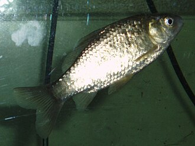

ふな（鮒）の漁獲量 都道府県ランキング
1位から3位までと、とれた量
ふなが日本でいちばん多くとれるのは岡山県です。117 tで、全国（248 t）の47%を占めます。

| 順位 | 都道府県 | 漁獲量 | 全国に占める割合 |
|---|---|---|---|
| 1位 | 岡山県 | 117 t | 47% |
| 2位 | 新潟県 | 47 t | 19% |
| 3位 | 滋賀県 | 44 t | 18% |
この数字について
- 分類：鯉の仲間
- 全国の漁獲量：248 t
- この数字が表すもの：漁獲量（川や湖でとった重さ）
- 調査：内水面漁業生産統計調査（内水面漁業） 令和6年
- この品目は川や湖の統計です。
- 13県分を調査（調査していない県は順位に入りません）
ふなの漁獲量について、よくある質問
- ふなの漁獲量が日本一の都道府県はどこですか？
- 岡山県です。内水面漁業生産統計調査（内水面漁業）（令和6年）で117 tでした。
- ふなの漁獲量ランキング2位・3位はどこですか？
- 2位は新潟県（47 t）、3位は滋賀県（44 t）です。
- ふなの全国の漁獲量はどれくらいですか？
- 248 t（令和6年）です。